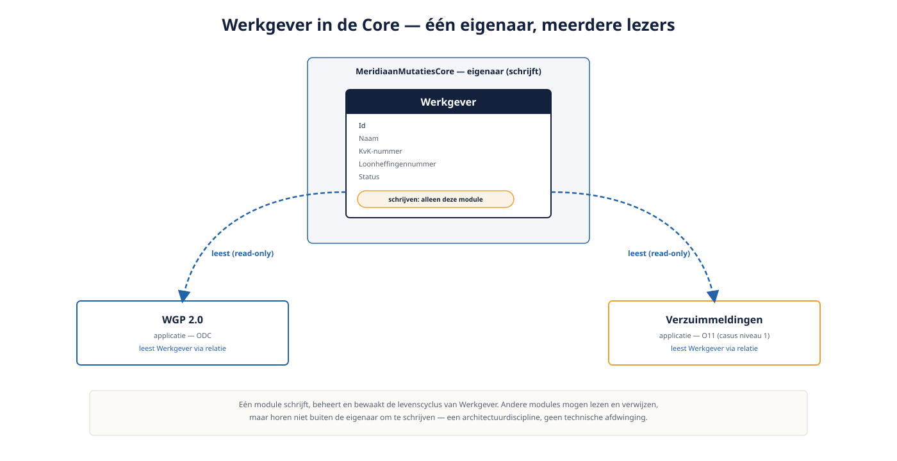

Deel 13 — Datamodellering op schaal en koppelvlakken tussen apps
Slidedeck · Ductus-cursus OutSystems · Niveau 2 — Professional · deel 13 van 30 · 12 slides
Slide 1 — Title: OutSystems: Vakbekwaam
OutSystems: Vakbekwaam
Deel 13 — Datamodellering op schaal en koppelvlakken tussen apps
Slide 2 — Bullets: Wanneer een entity landschap-eigendom wordt
Wanneer een entity landschap-eigendom wordt
Werkgever: nodig voor WGP 2.0 én Verzuimmeldingen- Verhuist naar de Core-library
- Eigenaarschap wordt expliciet: één schrijft, anderen lezen

Slide 3 — Section: Relatie of API?
Relatie of API?
Slide 4 — Table: De vuistregel
De vuistregel
| Directe entity-relatie | API-koppelvlak | |
|---|---|---|
| Binnen eigen landschap | Ja, meestal beste keuze | — |
| Over organisatiegrens | — | Ja (zie API-cursus) |
| Voorbeeld | Werkgever via library | Mutatie-API |
Slide 5 — Opdracht: Opdracht 13.1 — Relatie of API?
Opdracht 13.1 — Relatie of API?
Drie situaties met Werkgever.
→ Werkboek 13.1
Slide 6 — Section: Wat verandert er bij schaal
Wat verandert er bij schaal
Slide 7 — Statement: Consistentie boven snelheid.
Consistentie boven snelheid.
Elke wijziging is nu een gecoördineerde afweging.
Slide 8 — Opdracht: Baan A / Baan B
Baan A / Baan B
A — Werkgever verplaatsen naar Core in Service Studio
B — Zelfde verplaatsing + sluiproute testen in ODC Studio
→ Werkboek, eigen baan
Slide 9 — Table: Eigenaarschap afdwingen: O11 versus ODC
Eigenaarschap afdwingen: O11 versus ODC
| O11 | ODC | |
|---|---|---|
| Directe DB-toegang | Vaker mogelijk → sluiproute makkelijker | Primair via entity-laag → sluiproute lastiger |
Slide 10 — Opdracht: Reflectieopdracht 13.2
Reflectieopdracht 13.2
Waarom is eigenaarschap afspraak én techniek, niet alleen techniek?
→ Werkboek 13.2
Slide 11 — Bullets: Kernpunten deel 13
Kernpunten deel 13
- Gedeelde entity vraagt expliciet eigenaarschap
- Relatie binnen het landschap, API over de organisatiegrens
- Wijzigingen aan gedeeld datamodel: gecoördineerd, niet individueel
- ODC bemoeilijkt sluiproutes rond eigenaarschap sterker dan O11
Slide 12 — Section: Volgende deel: Performance — aggregates, caching, meten
Volgende deel: Performance — aggregates, caching, meten